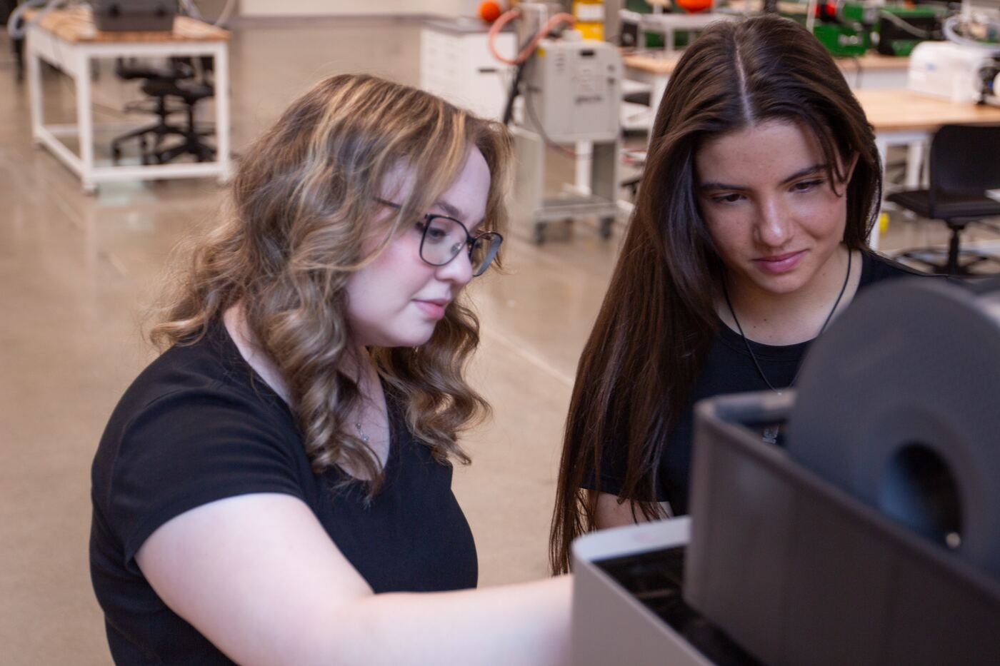

← Back to facilities
Facilities & equipment
NVIDIA Isaac Sim workstations
What they are
Workstations running NVIDIA Isaac Sim, a physics-based robot simulation platform. Students build and test robot scenes in simulation before - or instead of - touching hardware.

Programming and simulation work in the lab.
How the lab uses them
The workstations host the lab's guided simulation series for RAS 545: a first physics simulation, joint and tool-center-point control of a simulated UR5e arm, and a ROS 2-enabled TurtleBot 3 with sensors, localization, and autonomous Nav2 navigation.